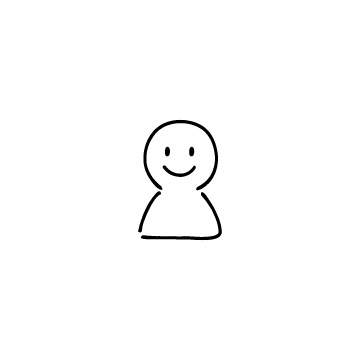

about
私について

2004年岐阜県生まれ名古屋育ち。
高校の授業で作品制作のノウハウやAdobe製品に触れデザインについて学習。
個人で作業するのが好きだったので、趣味でイラストや手書きアニメーションを制作。
1年生のMayaの授業で3Dに興味を持ち、今年の3月頃からblenderに挑戦中。
私について
2004年岐阜県生まれ名古屋育ち。
高校の授業で作品制作のノウハウやAdobe製品に触れデザインについて学習。
個人で作業するのが好きだったので、趣味でイラストや手書きアニメーションを制作。
1年生のMayaの授業で3Dに興味を持ち、今年の3月頃からblenderに挑戦中。
私の好きなこと

特にレトロな硬めプリンが大好きです。
カフェが好きすぎてカフェバイトもしてます。

お金を使うことでストレス発散してます。
物欲が強すぎて常に金欠です。

旅先で食べるフランクフルトが美味い。
自分の運転で遠出してみたいです。

人生で一番好きな時間です。
特にエビが大好物です。

犬と二人暮らしするのが目標です。
家に帰ったら玄関まで走ってきてほしい。

創作で今一番楽しいと感じています。
このアイコンも自作です。
扱えるソフト

今までの制作物
1.illustration作品


喫茶ファーマのメニュー表
2023.10.18 ~ 2023.11.28

2.イラスト・ファンアート

新しい学校のリーダーズ
2023.7.4 ~ 2023.7.26
一年生の動画制作の課題の素材として制作。コントラストのはっきりした配色で楽曲「オトナブルー」の昭和レトロな雰囲気を演出した。

MiNT GiRL
2024.7.11 ~ 2024.7.17
テーマはチョコミントの女の子。ステッカーのような描写と質感でポップなイメージにした。
3.手書きアニメーション
なんか入れる
4.blender作品

first art 2024.3.8
初めてblenderに触れた日、3DCG作品の可愛さと制作の面白さに目覚めた作品。

blue berry tarto 2024.3.20
オブジェクトにシェーダーで編集を加えた作品。
特に粉糖のかかり具合とタルト生地の焼き目がリアル寄りになるようにこだわった。
drink animation 2024.6.23
アニメーション機能を応用した作品。
ミントカラーのグラデーションや水面の編集に力を入れた。

んぽちゃむ 2024.3.17
初めて自分の力で制作した作品。頭上の花の形状と全身のバランスに注意しながら作成。

blue lip 2024.6.21
コスメが好きでパッケージっぽく制作。質素なのでブラッシュアップしていきたい。

gaming room 2024.3.23 ~ 2024.7.4
3ヶ月以上かけて制作した自分史上最高の作品。テーマはゲーム × 猫 × ゆめかわカラー


ラフ

ソリッド

仮完成
ブラッシュアップ後の完成品
作品記録場所
twitter(X) @rmi___i